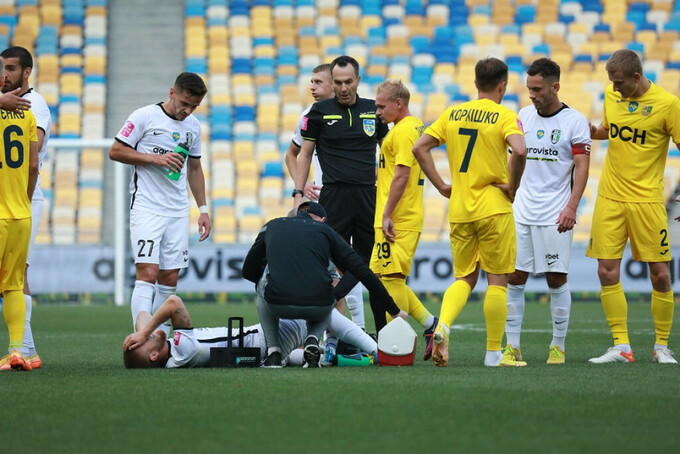

Зибитые голы:
-
-
Александрия:
- Калитвинцев,11
-
-
Металлист:
- Панасенко,21
- Прядун,64
- Мизюк,72
Третий тур украинской Премьер-лиги проходил по уже привычной схеме из четырех последовательных игровых дней, и символически завершался противостоянием на главной арене страны между командами, которые до этого еще ни разу не проигрывали в предыдущих встречах. «Александрия» и харьковский «Металлист» не собирались уступать и в очном противостоянии, поэтому поединок между ними обещал быть достаточно ожесточенным.
Кадровые резервы у тренерского штаба Олега Ратия несколько скромнее, чем у творческого коллектива Юрия Гуры, однако и амбиции у «полиграфов» относительно собственных выступлений в этом сезоне более значимы. Именно поэтому номинальные хозяева уже с первых минут попытались захватить инициативу у чужих ворот, и за непродолжительный отрезок на старте встречи создали два качественных момента для Волошина и Демченко, однако после выстрелов от полузащитников с близкого расстояния мяч непременно проходил мимо левой штанги.
Рисковал пробить в ту же зону и Владислав Калитвинцев немногим позднее, однако провалить построенную атаку с правого фланга Волошиным с завершающим пасом за спины защитникам не имел морального права. Команда Гуры повела в счете, однако продержалась в таком статусе не слишком долго – скорая контратака от «Металлиста» на 21 минуте завершилась выстрелом Панасенко с левого фланга штрафной в дальний угол. В этот момент мы лишний раз убедились, что Сергей бьет так же мощно, как и исполняет Государственный Гимн Украины.
«Полиграфы» были удивлены пропущенным мячом, что можно было увидеть за их замедленными действиями на чужой половине поля. А тут еще и капитан хозяев, Максим Третьяков, получил повреждение, обусловившее его дальнейшую замену на Кожушка. «Александрия» не могла набрать обороты, но вдруг соперники решили ей в этом помочь. Свежий Кожушко на 35 минуте решил промчаться по правому флангу атаки, но его намерение встретил прыжком в ноги Порох. Жаль, что в прямом эфире мы этот момент не увидели, потому что именно за него защитник гостей был удален.
Несмотря на факт отсутствия одного из игроков на поле, Ратий не стал производить замены на скорую руку, что могло только ухудшить положение дел его команды. В эту ловушку в итоге попал Гура, когда сразу после перерыва выпустил на поле двух быстрых игроков линии нападения, Авагимяна и Костышина, желая сразу же добить соперников. «Александрия» в итоге так ничего и не успела создать, а пропустила во время первой же попытки соперников выйти в атаку на правый фланг штрафной, где Прядун удачно разобрался со скидкой от Пидлепенца.
Делать оставалось больше нечего – хозяева начали раскрываться еще сильнее, но пропустили в третий раз, когда Билык допустил глупую ошибку при попытке перехватить навес от Панасенко с углового на правом фланге на Мизюка, который в конце концов переправил мяч в пустые ворота. На завершающий отрезок игры сил и желания у футболистов Гуры уже не хватило, а для соперников и такой результат выглядел сенсацией. В следующем туре «Александрия» сыграет в гостях против полтавской «Ворсклы», а харьковский «Металлист» сыграет на выезде против «Колоса».